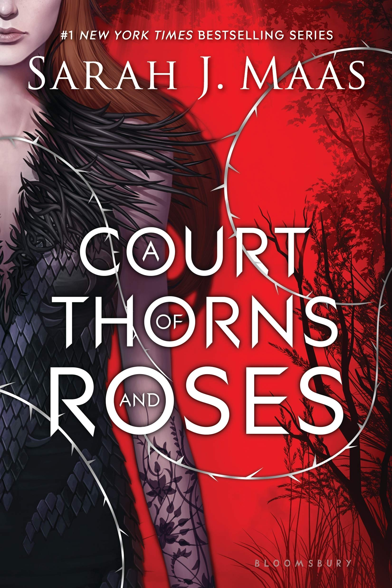
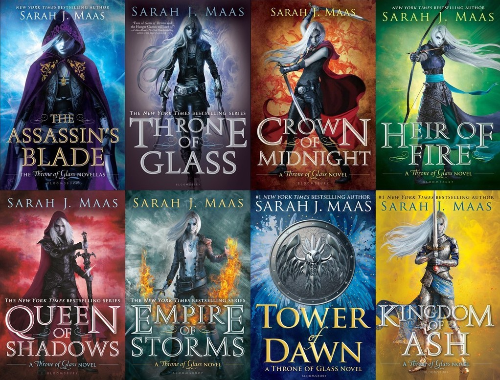

A Court of Throns and Roses, the first of the as of yet unfinished series
When nineteen-year-old huntress Feyre kills a wolf in the woods, a beast-like creature arrives to demand retribution for it. Dragged to a treacherous magical land she only knows about from legends, Feyre discovers that her captor is not an animal, but Tamlin--one of the lethal, immortal faeries who once ruled their world. As she dwells on his estate, her feelings for Tamlin transform from icy hostility into a fiery passion that burns through every lie and warning she's been told about the beautiful, dangerous world of the Fae. But an ancient, wicked shadow over the faerie lands is growing, and Feyre must find a way to stop it . . . or doom Tamlin--and his world--forever.
Throne of Glass Series

The entire Throne of Glass series
After serving out a year of hard labor in the salt mines of Endovier for her crimes, 18-year-old assassin Celaena Sardothien is dragged before the Crown Prince. Prince Dorian offers her her freedom on one condition: she must act as his champion in a competition to find a new royal assassin. Her opponents are men-thieves and assassins and warriors from across the empire, each sponsored by a member of the king's council. If she beats her opponents in a series of eliminations, she'll serve the kingdom for three years and then be granted her freedom. Celaena finds her training sessions with the captain of the guard, Westfall, challenging and exhilirating. But she's bored stiff by court life. Things get a little more interesting when the prince starts to show interest in her... but it's the gruff Captain Westfall who seems to understand her best. Then one of the other contestants turns up dead... quickly followed by another. Can Celaena figure out who the killer is before she becomes a victim? As the young assassin investigates, her search leads her to discover a greater destiny than she could possibly have imagined.
Crescent City Series
House of Earth and Blood, the first of the as of yet unfinished series
Bryce Quinlan had the perfect life―working hard all day and partying all night―until a demon murdered her closest friends, leaving her bereft, wounded, and alone. When the accused is behind bars but the crimes start up again, Bryce finds herself at the heart of the investigation. She’ll do whatever it takes to avenge their deaths. Hunt Athalar is a notorious Fallen angel, now enslaved to the Archangels he once attempted to overthrow. His brutal skills and incredible strength have been set to one purpose―to assassinate his boss’s enemies, no questions asked. But with a demon wreaking havoc in the city, he’s offered an irresistible deal: help Bryce find the murderer, and his freedom will be within reach. As Bryce and Hunt dig deep into Crescent City’s underbelly, they discover a dark power that threatens everything and everyone they hold dear, and they find, in each other, a blazing passion―one that could set them both free, if they’d only let it.